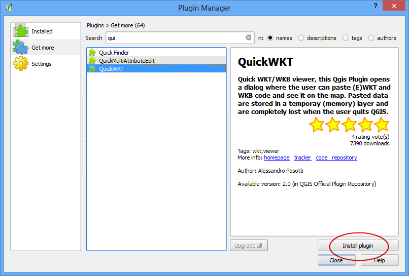

플러그인 사용하기
[ Download PDF A4 Letter ]
플러그인은 QGIS에 유용한 피처를 추가합니다. QGIS개발자들과 다른 독립 사용자들은 소프트웨어에 핵심기능을 확장하기 위해 플러그인을 개발합니다. 이러한 플러그인은 모든 사용자들을 위해서 QGIS에서 유용하게 사용됩니다.
작업 개요
여기서는 어떻게 “핵심 플러그인”을 사용하고 또한 “확장 플러그인”을 다운로드하고 인스톨하는지 배우게됩니다. 일단 플러그인이 인스톨되면 QGIS메뉴의 어디에 플러그인이 위치하는지도 알게됩니다.
과정
핵심 플러그인
핵심 플러그인은 이미 표준 QGIS를 인스톨할 때 일부분이 됩니다. 플러그인을 사용하기 위해서는 활성화시키기만 하면 됩니다.
QGIS를 시작합니다. 메뉴:menuselection:Plugins –> Manage and Install Plugins...`를 선택하면 :guilabel:`Plugin Manager 다이알로그 박스가 나타납니다.

QGIS를 처음 사용할 경우라도 :guilabel:`Installed`탭에 많은 플러그인 목록들을 보게될 것입니다. 이것들은 핵심 플러그인이고 QGIS 인스톨때 같이 설치됩니다.

플러그인중 하나를 활성화 시켜봅시다. :guilabel:`Spatial Query Plugin`의 체크박스에 체크를 합니다. 이렇게 하면 플러그인을 활성화 할 수 있고 이것을 사용할 수 있게 될 것입니다. 한가지 알아두어야 할 것은 플러그인은 다양한 위치에 메뉴를 삽입할 수 있고 새로운 패널과 툴바를 만들 수 있습니다. 때로는 새로 활성화된 툴을 어떻게 찾는지 어려움을 겪을 수도 있습니다. 실마리는 플러그인 설명을 찾아보는 것입니다. 여기서는 “Category: 벡터 Vector*라서 설명되어 있습니다. 이것은 플러그인이 활성화되면 ‘벡터’메뉴에서 찾을 수 있다는 것을 나타냅니다. :guilabel:`Close`를 클릭합니다.

이제 :guilabel:`Spatial Query Plugin`이 활성화되었습니다. 플러그인으로 추가된 기능을 사용하기 위하여 :menuselection:`Vector –> Spatial Query`으로 갈 수 있습니다.

외부 플러그인
외부 플러그인은 `QGIS Plugins Repository <http://plugins.qgis.org/>`_에서 사용가능 합니다. 그리고 거기에 있는 플러그인을 사용하기에 앞서 사용자가 인스톨을 해야합니다. 플러그인을 쉽게 찾아보고 인스톨하는 것은 :guilabel:`Plugin Manager`툴 입니다.
QGIS를 시작합니다. 메뉴:menuselection:Plugins –> Manage and Install Plugins...`를 선택하면 :guilabel:`Plugin Manager 다이알로그 박스가 나타납니다.

Get more 탭을 클릭하십시오. 여기서 프러그인 목록을 볼 수 있을 것입니다.

여기서는 ‘QuickQKT’를 찾아서 인스톨해보도록 하겠습니다. search 박스에서 *qui*라고 치기 시작하면 아래와 같은 결과를 볼 수 있을 것입니다. QuickWKT`를 클릭하십시오. 다음, :guilabel:`Install plugin 버튼을 클릭하면 인스톨됩니다.

일단 플러그인이 다운로드되고 인스톨되면 확인 다이알로그를 볼 수 있을 것입니다.

설명에 플러그인 카테고리에 대해 아무 설명이 없다면 새롭게 설치된 플러그인에 접근하는 것이 어렵습니다. 대부분의 외부 플러그인은 QGIS의 Plugins 메뉴 아래에 설치됩니다. 툴바에 설치됩니다. 이 버튼도 새롭게 설치된 플러그인에 접근하는데 사용됩니다.

실험적인 플러그인
이제 QGIS에서 External Plugin*을 어떻게 찾고 설치하는게 알게 되었습니다. 보다 고급 옵션을 살펴보겠습니다. 때때로 특별한 기능의 플러그인을 찾고자 하는데 :guilabel:`Get more` 탭에서 찾을 수 없을 때가 있습니다. 그것은 플러그인이에 *Experimental*이 표시되어 있기 때문입니다. 여기서 *Experimental 플러그인을 어떻게 설치하는지 알아보겠습니다.
메뉴에서 옵션이 보입니다. 옆에 있는 체크박스에 클릭하고 활성화 합니다.

:guilabel:`New`탭이 새로 나타납니다. 새로 활성화된 실험적인 플러그인은 여기서 확인할 수 있습니다.
주석
:guilabel:`New`탭은 실험적인 플러그인을 활성화 할때만 일시적으로 나타납니다. 다음번에 :guilabel:`Plugin Manager`을 열면 실험적인 플러그인은 :guilabel:`Get more`탭에서 정규 플러그인을 따라 보여집니다.

:guilabel:`TimeManager`라는 플러그인을 설치해 봅시다. 플러그인 이름을 클릭하고 :guilabel:`Install`을 클릭하십시오.

이제 QGIS로 돌아오면 캔버스 아랫쪽에 새롭게 *Panel*이 나타납니다. 이 패널은 TimeManager 플러그인에의해 만들어진 것입니다. 이것이 사용자 인터페이스에 유용한 기능을 추가하는 플러그인 방법입니다.

- You can enable/disable this panel from .